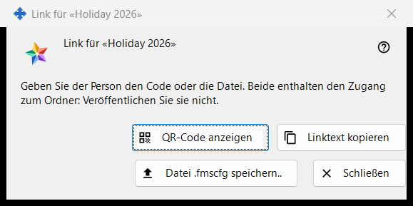
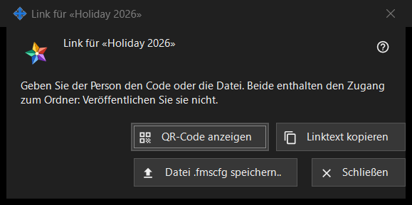

Link für einen Ordner
Verwendungszweck
Übergibt einen veröffentlichten Ordner an eine Person ohne Konto auf dem Austauschserver: als QR-Code, als Linktext und als .fmscfg-Datei. Das Fenster öffnet sich nach «Link erstellen..» oder «Neuer Link..» in der Gruppe «Meine Freigaben im Austauschkonto» sowie über «QR / Code anzeigen..» im Fenster «Zugriff nach außen geben..» eines Ordners. Im aktuellen Programm sind beide Befehle deaktiviert, weil der Zugriff für Personen außerhalb des Kontos nicht angeboten wird; diese Seite beschreibt, was das Fenster zeigt, sobald ein Link existiert.


In dieser Reihenfolge
- Wählen Sie einen veröffentlichten Ordner und klicken Sie auf «Link erstellen..» (oder auf «Neuer Link..», um einen alten Link zu ersetzen).
- Lesen Sie den Hinweis oben im Fenster.
- Geben Sie den Link weiter mit «QR-Code anzeigen», «Linktext kopieren» oder «Datei .fmscfg speichern..».
- Klicken Sie auf «Schließen».
Die Elemente
Wann das Fenster verfügbar ist
Das Fenster gibt es nur für einen Link, der gerade erstellt wurde oder bereits existiert. Solange der Zugriff für Personen außerhalb des Kontos nicht angeboten wird, sind «Link erstellen..» und «Neuer Link..» deaktiviert, ein Hinweis darunter nennt den Grund und das Fenster öffnet sich nicht; auch «QR / Code anzeigen..» ist deaktiviert. «Link entfernen» bleibt verfügbar.
Der Hinweis oben
«Geben Sie der Person den Code oder die Datei. Beide enthalten den Zugang zum Ordner: Veröffentlichen Sie sie nicht.» Wer den QR-Code, den Linktext oder die Datei besitzt, kann diesen Ordner öffnen. Der Linktext wird nie auf dem Bildschirm angezeigt.
QR-Code anzeigen
Öffnet das QR-Bild in einem Vergrößerungsfenster. Die Schaltfläche ist nur vorhanden, wenn sich ein QR-Code erzeugen ließ; ist der Linktext für einen QR-Code zu groß, lautet die Antwort «Der Code ist für einen QR-Code zu groß - verwenden Sie die Datei.».
Linktext kopieren
Legt den Linktext (er beginnt mit FMSSFTP2:) über einen geschützten Weg in die Zwischenablage, der ihn aus dem Windows-Zwischenablageverlauf und aus der Cloud-Zwischenablage heraushält, und antwortet «Linktext kopiert.». Nur vorhanden, wenn der Link einen Text hat.
Datei .fmscfg speichern..
Speichert eine Einstellungsdatei für genau diesen einen Ordner, die nur der Besitzer lesen kann. Das Fenster meldet «Datei gespeichert:» mit dem Pfad oder «Die Datei konnte nicht gespeichert werden.». Nur vorhanden, wenn sich die Datei erzeugen ließ.
Neuer Link und Link entfernen
Beide gehören zur Gruppe, nicht zu diesem Fenster, und beide fragen zuerst nach, mit «Nein» als Standardantwort: «Neuer Link..» warnt, dass alle früheren QR-Codes und Dateien nicht mehr funktionieren, «Link entfernen», dass alle damit ausgegebenen QR-Codes und Dateien nicht mehr funktionieren.
Schließen
Schließt das Fenster und entfernt daraus den Linktext, den Dateiinhalt und das QR-Bild.
Managereinstellungen · SFTP-Freigabeeinstellungen · Einstellungen des Austauschservers